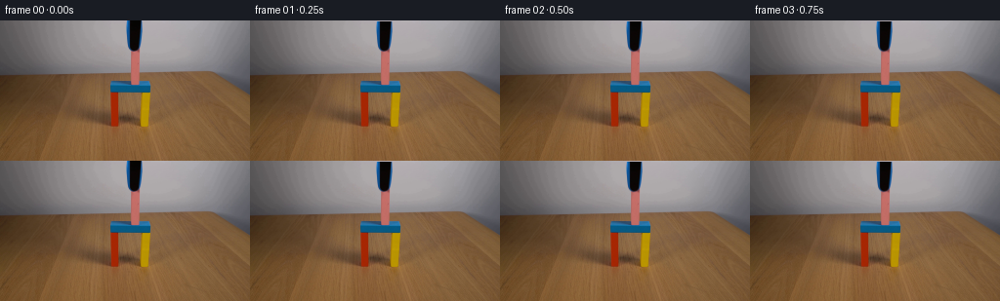

CODING AGENTS AS PIXEL WORLD MODELS
traex/GPT-6.1-Sol · 0173
点击播放 · 原生 RGB 像素
逐轮保存的候选
回放视频、检查图与代码变化。
每份候选均可单独播放。实际图片检查记录在下方工具轨迹中。
候选 01播放与检查图
点击播放 · 原生 RGB 像素


展开代码变化
--- 上一保存版本
+++ 本次保存版本
@@ -0,0 +1,119 @@
+from pathlib import Path
+import numpy as np
+from PIL import Image, ImageDraw
+from scipy.ndimage import map_coordinates
+import artifact_io
+
+ROOT = Path(__file__).resolve().parent
+H, W = 144, 256
+
+def smoothstep(x):
+ x = np.clip(x, 0., 1.)
+ return x*x*(3.-2.*x)
+
+
+def generate():
+ image = np.asarray(Image.open(ROOT/'first_frame.png').convert('RGB'), dtype=np.uint8)
+ original = image.astype(np.float64)
+ yy, xx = np.mgrid[:H, :W]
+
+ # The wall is defocused, with a gentle, nonuniform illumination gradient.
+ # Restore only the narrow part occluded by the vertical handling tool.
+ background = original.copy()
+ for y in range(32):
+ lx = np.arange(123, 129)
+ rx = np.arange(147, 153)
+ xs = np.r_[lx, rx]
+ for c in range(3):
+ coef = np.polyfit(xs-137., original[y,xs,c], 2)
+ background[y,128:147,c] = np.polyval(coef,np.arange(128,147)-137.)
+
+ # The held block's small upper face is partially hidden by the jaws in
+ # frame zero. Its remaining long, matte-painted face is left untouched.
+ scale = 12
+ patch = Image.new('L', (W*scale, H*scale), 0)
+ draw = ImageDraw.Draw(patch)
+ verts = [(134.05,29.15),(142.62,28.72),(142.62,32.0),(134.05,32.0)]
+ draw.polygon([(round(x*scale),round(y*scale)) for x,y in verts], fill=255)
+ block_top_alpha = np.asarray(patch.resize((W,H),Image.Resampling.LANCZOS), dtype=float)/255.
+ block_top_alpha[32:] = 0
+ top = np.zeros_like(background)
+ # Original wood-block paint and the mildly shaded horizontal top face.
+ top[:] = [165.,90.,89.]
+ top += (np.clip(xx-134,0,9)/9.)[:,:,None] * np.array([-3.,-2.,-2.])
+ top += (np.clip(yy-29,0,2)/2.)[:,:,None] * np.array([0.,0.5,1.])
+ base = background*(1-block_top_alpha[...,None])+top*block_top_alpha[...,None]
+ # These right-hand top-face samples are not obscured by the tool.
+ base[31,140:144] = original[31,140:144]
+ base[30,142:144] = original[30,142:144]
+ base[29,143] = original[29,143]
+
+ # Extract an antialiased, premultiplied moving layer from RGB contrasts.
+ # On blue edges the contrast is measured against blue steel; in the
+ # interior it is measured against the near-black rubber gripping face.
+ expected = np.empty_like(original)
+ expected[:] = [10.,7.,6.]
+ blue = ((original[:,:,2]-original[:,:,1] > 10) &
+ (original[:,:,1]-original[:,:,0] > 8))
+ expected[blue] = [13.,78.,140.]
+ expected[29:] = [20.,25.,39.]
+ expected[29,133] = [18.,65.,112.]
+ expected[30,134] = [25.,57.,93.]
+ d = original-base
+ v = expected-base
+ alpha = np.clip(np.sum(d*v,axis=2)/(np.sum(v*v,axis=2)+1e-9),0,1)
+ support = (xx>=128)&(xx<=146)&(yy<=31)
+ support[31] &= (xx[31]>=134)&(xx[31]<=139)
+ support[30] &= (xx[30]>=132)&(xx[30]<=141)
+ alpha *= support
+ alpha[alpha<0.013] = 0
+ # Core samples are opaque and retain their exact surface texture.
+ alpha[(original.mean(2)<65)&support] = 1
+ alpha[(alpha>.96)&support] = 1
+ premul = np.where(alpha[:,:,None]>0,
+ original-base*(1-alpha[:,:,None]), 0.)
+ premul = np.minimum(np.maximum(premul,0.),alpha[:,:,None]*255.)
+
+ # Clean the vacated pixels exactly; all nonmoving areas stay source RGB.
+ clean = original.copy()
+ active = alpha > 0
+ clean[active] = base[active]
+ # Any tiny unmodelled blur in the original tool silhouette is also removed.
+ cleanup = (yy<29)&(xx>=129)&(xx<=145)
+ clean[cleanup] = base[cleanup]
+ mismatch = original - (clean*(1-alpha[:,:,None])+premul)
+
+ frames=[]
+ for i in range(20):
+ t=i/4.
+ if i==0:
+ frames.append(image.copy())
+ continue
+ # A gentle final seating pressure, a release pause, then vertical
+ # withdrawal. The gate and newly supported block remain stable.
+ seat = .22*smoothstep(t/.55)
+ if t < .8:
+ up=0.
+ else:
+ u=(t-.8)/2.8
+ up=39.*smoothstep(u)
+ dy=seat-up
+ sx=0.0
+ coords=np.array([yy-dy,xx-sx])
+ a=map_coordinates(alpha,coords,order=1,mode='constant',cval=0.,prefilter=False)
+ p=np.stack([map_coordinates(premul[:,:,c],coords,order=1,
+ mode='constant',cval=0.,prefilter=False) for c in range(3)],2)
+ out=clean*(1-a[:,:,None])+p
+ # The source's contact-edge colour residual is only needed while the
+ # gripper is touching. Fade it smoothly as that area is uncovered.
+ residual=1-smoothstep(max(up,0.)/2.5)
+ if residual>0:
+ for c in range(3):
+ out[:,:,c] += residual*map_coordinates(mismatch[:,:,c],coords,
+ order=1,mode='constant',cval=0.,prefilter=False)
+ frames.append(np.clip(np.rint(out),0,255).astype(np.uint8))
+ return np.stack(frames)
+
+if __name__ == '__main__':
+ frames = generate()
+ artifact_io.save(frames,ROOT)
候选 02播放与检查图
点击播放 · 原生 RGB 像素
展开代码变化
--- 上一保存版本
+++ 本次保存版本
@@ -100,9 +100,9 @@
dy=seat-up
sx=0.0
coords=np.array([yy-dy,xx-sx])
- a=map_coordinates(alpha,coords,order=1,mode='constant',cval=0.,prefilter=False)
+ a=map_coordinates(alpha,coords,order=1,mode='nearest',prefilter=False)
p=np.stack([map_coordinates(premul[:,:,c],coords,order=1,
- mode='constant',cval=0.,prefilter=False) for c in range(3)],2)
+ mode='nearest',prefilter=False) for c in range(3)],2)
out=clean*(1-a[:,:,None])+p
# The source's contact-edge colour residual is only needed while the
# gripper is touching. Fade it smoothly as that area is uncovered.
@@ -110,7 +110,7 @@
if residual>0:
for c in range(3):
out[:,:,c] += residual*map_coordinates(mismatch[:,:,c],coords,
- order=1,mode='constant',cval=0.,prefilter=False)
+ order=1,mode='nearest',prefilter=False)
frames.append(np.clip(np.rint(out),0,255).astype(np.uint8))
return np.stack(frames)
候选 03播放与检查图
可观测工具轨迹
实际执行的命令与返回图片。
命令 1exit 0
/bin/bash -lc 'ls -la && cat prompt.txt && cat GENERATION_RULES.md'
命令 2exit 0
/bin/bash -lc "cat artifact_io.py && python - <<'PY'
from PIL import Image
import numpy as np
im=np.array(Image.open('first_frame.png'));print(im.shape)
for y in range(0,144,4):
line=''
for x in range(0,256,4):
r,g,b=im[y:y+4,x:x+4].mean((0,1));
if max(r,g,b)-min(r,g,b)<15:
c=' ' if r>210 else '.' if r>160 else ':' if r>100 else 'd' if r>50 else '#'
elif r>g*1.25 and r>b*1.1:c='R'
elif r>g*1.15 and b>g*1.15:c='P'
elif b>r*1.2 and b>g*1.1:c='B'
elif g>r*1.15 and g>b*1.1:c='G'
elif r>b*1.3 and g>b*1.2:c='Y'
else:c='o'
line+=c
print(f'{y:3} '+line)
PY"命令 3exit 0
/bin/bash -lc "python - <<'PY'
import numpy as np
from PIL import Image
from scipy.cluster.vq import kmeans2
im=np.asarray(Image.open('first_frame.png'))
a=im[0:111,85:164].reshape(-1,3).astype(float)
c,l=kmeans2(a,22,minit='++',seed=5)
chars='0123456789ABCDEFGHIJKL'
for i,col in enumerate(c):
pts=np.argwhere(l.reshape(111,79)==i)
print(chars[i],col.round().astype(int),len(pts),'xy mean',pts[:,::-1].mean(0).round(1)+[85,0])
lab=np.argmin(((im[0:111,85:164,None].astype(float)-c)**2).sum(3),axis=2)
for y in range(0,110,2):print(f'{y:3}', ''.join(chars[i] for i in lab[y,::1]))
PY"命令 4exit 0
/bin/bash -lc "python - <<'PY'
from PIL import Image
import numpy as np
im=np.array(Image.open('first_frame.png'))
for y in [0,10,20,27,28,29,30,31,32,33,34,40,50,53,54,59,60,61,62,63,64,65,66,67,68,70,72,73,74,80,100,110]:
print('\\ny=',y)
for x in range(126,149): print(x,tuple(im[y,x]),end='; ')
print()
PY"命令 5exit 0
/bin/bash -lc "python - <<'PY'
import numpy as np
from PIL import Image
im=np.array(Image.open('first_frame.png')).astype(int)
for y in range(24,37):
print('y',y,[(x,tuple(im[y,x])) for x in range(130,145)])
print('background boundaries')
for y in range(0,62,3):print(y,im[y,126],im[y,148],im[y,122],im[y,152])
PY"命令 6exit 0
/bin/bash -lc "python - <<'PY' import importlib.util for x in ['numpy','scipy','cv2','PIL']:print(x, bool(importlib.util.find_spec(x))) PY"
命令 7exit 0
/bin/bash -lc "cat > generate.py <<'PY'
from pathlib import Path
import numpy as np
from PIL import Image, ImageDraw
from scipy.ndimage import map_coordinates
import artifact_io
ROOT = Path(__file__).resolve().parent
H, W = 144, 256
def smoothstep(x):
x = np.clip(x, 0., 1.)
return x*x*(3.-2.*x)
def generate():
image = np.asarray(Image.open(ROOT/'first_frame.png').convert('RGB'), dtype=np.uint8)
original = image.astype(np.float64)
yy, xx = np.mgrid[:H, :W]
# The wall is defocused, with a gentle, nonuniform illumination gradient.
# Restore only the narrow part occluded by the vertical handling tool.
background = original.copy()
for y in range(32):
lx = np.arange(123, 129)
rx = np.arange(147, 153)
xs = np.r_[lx, rx]
for c in range(3):
coef = np.polyfit(xs-137., original[y,xs,c], 2)
background[y,128:147,c] = np.polyval(coef,np.arange(128,147)-137.)
# The held block's small upper face is partially hidden by the jaws in
# frame zero. Its remaining long, matte-painted face is left untouched.
scale = 12
patch = Image.new('L', (W*scale, H*scale), 0)
draw = ImageDraw.Draw(patch)
verts = [(134.05,29.15),(142.62,28.72),(142.62,32.0),(134.05,32.0)]
draw.polygon([(round(x*scale),round(y*scale)) for x,y in verts], fill=255)
block_top_alpha = np.asarray(patch.resize((W,H),Image.Resampling.LANCZOS), dtype=float)/255.
block_top_alpha[32:] = 0
top = np.zeros_like(background)
# Original wood-block paint and the mildly shaded horizontal top face.
top[:] = [165.,90.,89.]
top += (np.clip(xx-134,0,9)/9.)[:,:,None] * np.array([-3.,-2.,-2.])
top += (np.clip(yy-29,0,2)/2.)[:,:,None] * np.array([0.,0.5,1.])
base = background*(1-block_top_alpha[...,None])+top*block_top_alpha[...,None]
# These right-hand top-face samples are not obscured by the tool.
base[31,140:144] = original[31,140:144]
base[30,142:144] = original[30,142:144]
base[29,143] = original[29,143]
# Extract an antialiased, premultiplied moving layer from RGB contrasts.
# On blue edges the contrast is measured against blue steel; in the
# interior it is measured against the near-black rubber gripping face.
expected = np.empty_like(original)
expected[:] = [10.,7.,6.]
blue = ((original[:,:,2]-original[:,:,1] > 10) &
(original[:,:,1]-original[:,:,0] > 8))
expected[blue] = [13.,78.,140.]
expected[29:] = [20.,25.,39.]
expected[29,133] = [18.,65.,112.]
expected[30,134] = [25.,57.,93.]
d = original-base
v = expected-base
alpha = np.clip(np.sum(d*v,axis=2)/(np.sum(v*v,axis=2)+1e-9),0,1)
support = (xx>=128)&(xx<=146)&(yy<=31)
support[31] &= (xx[31]>=134)&(xx[31]<=139)
support[30] &= (xx[30]>=132)&(xx[30]<=141)
alpha *= support
alpha[alpha<0.013] = 0
# Core samples are opaque and retain their exact surface texture.
alpha[(original.mean(2)<65)&support] = 1
alpha[(alpha>.96)&support] = 1
premul = np.where(alpha[:,:,None]>0,
original-base*(1-alpha[:,:,None]), 0.)
premul = np.minimum(np.maximum(premul,0.),alpha[:,:,None]*255.)
# Clean the vacated pixels exactly; all nonmoving areas stay source RGB.
clean = original.copy()
active = alpha > 0
clean[active] = base[active]
# Any tiny unmodelled blur in the original tool silhouette is also removed.
cleanup = (yy<29)&(xx>=129)&(xx<=145)
clean[cleanup] = base[cleanup]
mismatch = original - (clean*(1-alpha[:,:,None])+premul)
frames=[]
for i in range(20):
t=i/4.
if i==0:
frames.append(image.copy())
continue
# A gentle final seating pressure, a release pause, then vertical
# withdrawal. The gate and newly supported block remain stable.
seat = .22*smoothstep(t/.55)
if t < .8:
up=0.
else:
u=(t-.8)/2.8
up=39.*smoothstep(u)
dy=seat-up
sx=0.0
coords=np.array([yy-dy,xx-sx])
a=map_coordinates(alpha,coords,order=1,mode='constant',cval=0.,prefilter=False)
p=np.stack([map_coordinates(premul[:,:,c],coords,order=1,
mode='constant',cval=0.,prefilter=False) for c in range(3)],2)
out=clean*(1-a[:,:,None])+p
# The source's contact-edge colour residual is only needed while the
# gripper is touching. Fade it smoothly as that area is uncovered.
residual=1-smoothstep(max(up,0.)/2.5)
if residual>0:
for c in range(3):
out[:,:,c] += residual*map_coordinates(mismatch[:,:,c],coords,
order=1,mode='constant',cval=0.,prefilter=False)
frames.append(np.clip(np.rint(out),0,255).astype(np.uint8))
return np.stack(frames)
if __name__ == '__main__':
frames = generate()
artifact_io.save(frames,ROOT)
PY
python generate.py
python - <<'PY'
from PIL import Image
import numpy as np
im=np.array(Image.open('first_frame.png'))
fs=np.stack([np.array(Image.open(f'frames/{i:02d}.png')) for i in range(20)])
print(fs.shape,fs.dtype,'first exact',np.array_equal(fs[0],im))
for i in [1,3,5,7,9,11,13,15,19]:
f=fs[i].astype(int);r,g,b=f.transpose(2,0,1)
mask=(f.mean(2)<95)&(np.indices(r.shape)[0]<33)&(np.indices(r.shape)[1]>127)&(np.indices(r.shape)[1]<149)
print(i,'tool extent',np.argwhere(mask).max(0).tolist() if mask.any() else 'gone', 'delta pixels',np.any(fs[i]"'!=im,2).sum())
print('"'Final patch RGB')
for y in range(26,34):print(y,fs[-1,y,132:145].tolist())
PY"命令 8exit 0
/bin/bash -lc "python - <<'PY'
from PIL import Image
import numpy as np
fs=np.stack([np.array(Image.open(f'frames/{i:02d}.png')) for i in range(20)])
for i in [0,1,3,4,5,7,9,11,19]:
print(i,'row0',fs[i,0,138].tolist(),'tip',fs[i,31,137].tolist(),'finaltoolmin',fs[i,:32,128:147].mean(2).min())
print('deltapct',np.abs(fs[i].astype(float)-fs[max(i-1,0)]).mean())
PY"命令 9exit 0
/bin/bash -lc "python - <<'PY'
p='generate.py'
s=open(p).read().replace(\"order=1,mode='constant',cval=0.,prefilter=False\", \"order=1,mode='nearest',prefilter=False\").replace(\"order=1,\\n mode='constant',cval=0.,prefilter=False\", \"order=1,\\n mode='nearest',prefilter=False\")
open(p,'w').write(s)
PY
python generate.py
python - <<'PY'
from PIL import Image
import numpy as np
f=np.stack([np.array(Image.open(f'frames/{i:02d}.png')) for i in range(20)])
assert f.dtype==np.uint8 and f.shape==(20,144,256,3)
assert np.array_equal(f[0],np.array(Image.open('first_frame.png')))
print('Validated 20 RGB frames at 256Ã144; first frame is pixel-identical.')
print('Upper tool continuity:', [f[i,0,138].tolist() for i in range(4)])
print('Artifacts:',', '.join(p.name for p in __import__('pathlib').Path('.').iterdir() if p.name in ['generate.py','pixels.npz','index.html','frames']))
PY"保存候选 3 份；完成命令 9 次；可验证图片返回 0 张。原始 API 响应与完整日志保留在本地。